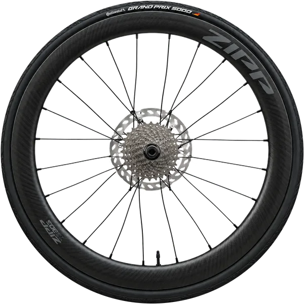
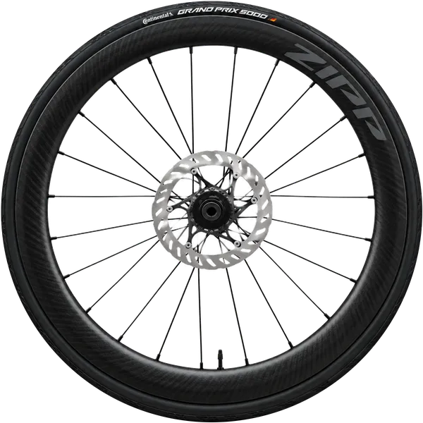
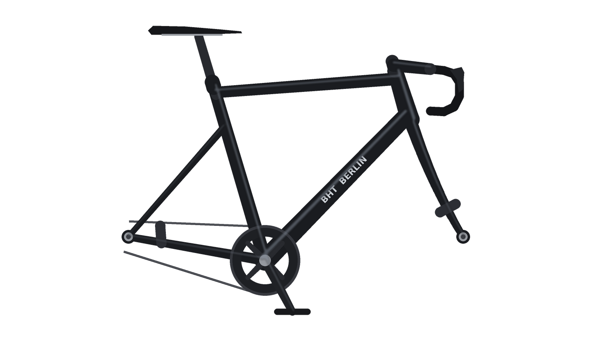

Das Rennrad



Hinterrad 0°, steht
Vorderrad 0°, steht
Bilder werden geladen …
Erweiterung: der hüpfende Hase
Alle 12 Bewegungsphasen liegen nebeneinander in einer Bilddatei (Sprite-Sheet). Ein Fenster mit overflow: hidden zeigt immer nur einen Ausschnitt; JavaScript verschiebt das Bild darin.
Phase 1 von 12
Ganzes Sprite-Sheet ansehen
Bedienung
| Taste | Wirkung |
|---|---|
| 1 2 3 | Hinterrad, Vorderrad oder beide auswählen. Ein Klick auf ein Rad wählt es ebenfalls aus. |
| L | Ausgewählte Räder einen Schritt (6°) nach links drehen, also rückwärts. Für weiteres Drehen erneut drücken. |
| R | Ausgewählte Räder einen Schritt (6°) nach rechts drehen, also vorwärts. |
| A | Automatische Drehung der ausgewählten Räder starten bzw. anhalten. Während sie läuft, ändern L/R die Richtung. |
| H | Hasen anhalten bzw. weiterhüpfen lassen. |
Alle Funktionen gibt es auch als Schaltflächen. Gedrückt gehaltene Tasten wiederholen den Schritt bewusst nicht. Beispiel für unabhängiges Drehen: 1, A (Hinterrad läuft), dann 2 und mehrmals L (Vorderrad schrittweise rückwärts).
Umsetzung
Räder: je 60 WebP-Dateien (0°, 6°, …, 354°). app.js lädt alle 120 Bilder vorab mit new Image() und decode() und tauscht danach nur noch das src-Attribut der beiden <img>-Elemente. Jedes Rad hat einen eigenen Zustand (Bild, Richtung, Automatik).
Warum 6°-Schritte? Beide Räder haben 24 Speichen; das Speichenbild wiederholt sich also alle 15°. Bei 15°-Schritten sähen alle Frames bis auf Logo und Ventil gleich aus, bei 10° liefen die Speichen scheinbar rückwärts (Wagenrad-Effekt). 6° liegt unter der halben Periode von 7,5°, dadurch drehen Speichen, Logo und Ventil sichtbar in dieselbe Richtung.
Ebenen: Unten liegen Bodenschatten und die beiden Räder, darüber der Rahmen als transparentes PNG. Gabel, Streben, Kette und Steckachsen verdecken so die Räder wie in echt, ohne dass etwas ausgeschnitten werden muss. Steckachsen und Bremssättel stehen fest, nur die Räder drehen sich.
Bildaufbereitung (tools/generate_assets.py): Das Skript findet die Reifenkante per Kreis-Fit und die Nabenmitte über Rotationssymmetrie. Beim Hinterrad saß die Nabe im Ausgangsbild 9 px neben der Reifenmitte; ohne Korrektur hätte das Rad beim Drehen geeiert. Der Nabenbereich wird deshalb verschoben und weich in die Speichen übergeblendet. Danach wird der weiße Hintergrund zwischen den Speichen transparent gemacht und jedes Frame gedreht. Die Positionen der Räder schreibt das Skript aus derselben Rahmengeometrie in bike-layout.css (Angaben in Prozent, daher auch auf kleinen Bildschirmen passgenau).
Hase: ein Sprite-Sheet mit 12 Bildern à 220 × 220 px mit Squash & Stretch, nachziehenden Ohren und einem Schatten, der mit der Höhe schrumpft.
Animation: eine gemeinsame requestAnimationFrame-Schleife mit zeitbasierter Bildrate, damit die Geschwindigkeit auf 60-Hz- und 120-Hz-Displays gleich ist.
Gebrauchstauglichkeit (ISO 9241-11 / -110)
- Aufgabenangemessenheit
- Die geforderten Tasten L, R und A behalten ihre Bedeutung; welches Rad sie betreffen, legt eine einzige Auswahl fest. Voreinstellung „Beide“, damit sich ohne Vorwissen sofort etwas dreht.
- Selbstbeschreibungsfähigkeit
- Jede Schaltfläche zeigt ihre Taste. Ausgewählte Räder leuchten, Winkel und Zustand beider Räder werden laufend angezeigt.
- Erwartungskonformität
- Rechts dreht im Uhrzeigersinn, also vorwärts in Fahrtrichtung. Kürzel mit Cmd/Strg (z. B. Cmd+R) bleiben dem Browser vorbehalten.
- Steuerbarkeit
- Räder einzeln oder gemeinsam, Automatik jederzeit anhaltbar, Geschwindigkeit einstellbar, Rahmen ausblendbar. Der Hase lässt sich stoppen und startet bei „Bewegung reduzieren“ nicht von selbst.
- Fehlertoleranz / Robustheit
- Bedienelemente sind erst aktiv, wenn alle Bilder geladen sind; ein Fortschritt wird angezeigt. Fehlt eine Datei, nennt die Seite sie beim Namen. Gehaltene Tasten erzeugen keine ungewollte Schrittfolge.
- Lernförderlichkeit & Zugänglichkeit
- Kurze Bedienhilfe mit Beispiel auf der Seite, sichtbarer Tastaturfokus, Auswahl als Radio-Gruppe für Screenreader, Statusmeldungen über eine Live-Region.
Test und Qualitätssicherung
Getestet in Chrome unter macOS: alle Tasten und Schaltflächen, Auswahl einzelner Räder per Taste und Klick, beide Räder gleichzeitig in Gegenrichtung, Richtungswechsel während der Automatik, gedrückt gehaltene Tasten, Tab-Wechsel, schmales Browserfenster. Die Konsole (Cmd+Alt+J) zeigt nach dem Laden nur eine Info-Meldung und keine Fehler.
Quellen
- Ausgangsbilder Laufräder: KI-generiert mit ChatGPT (OpenAI) am 07.10.2026, Prompt: "generiere mir ein Bild eines Rennrad Vorderrades mit Carbonfelgen, Mantel und Scheibenbremse." sowie "generiere mir ein Bild eines Rennrad Hinterrades mit Carbonfelgen, Mantel, Scheibenbremse sowie Kassette.". Originale:
Vorderrad.png,Hinterrad.png. Die abgebildeten Schriftzüge „Zipp“ und „Continental Grand Prix 5000“ sind Marken der jeweiligen Inhaber; es besteht keine Verbindung zu den Herstellern. Verwendung ausschließlich zu Studienzwecken. - Einzelbilder der Räder (Freistellung, Nabenkorrektur, 60 Rotationsstufen), Rahmen und Hase: selbst erstellt mit dem Python-Skript
tools/generate_assets.py(Pillow, NumPy, SciPy). - Schrift: Bricolage Grotesque, Mathieu Triay, SIL Open Font License, über Google Fonts.
- Referenzen: MDN: requestAnimationFrame, MDN: HTMLImageElement.decode(), MDN: KeyboardEvent, WAI-ARIA: Radio Group Pattern, ISO 9241-11:2018 und ISO 9241-110:2020.